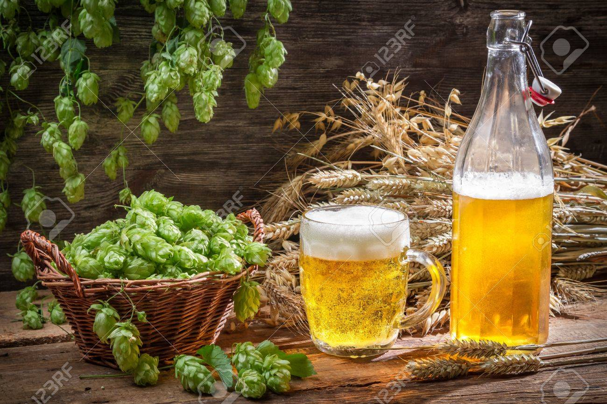

Gilboa Beer the official website
homemade beers, shop and courses
welcome to the Gilboa official homemade beer site!
here you can find:
one-on-one private and class courses
beer kit and product
our homemade beers shop
forums and groups of all around beer lovers to share information
and help each-other
